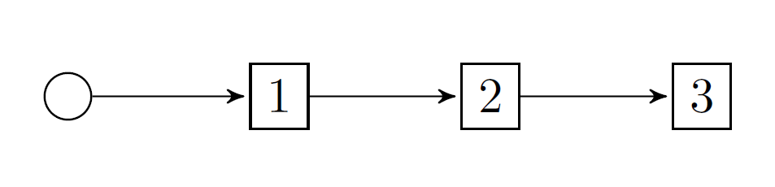

Basic I: first steps
Hydrothermal scheduling is the most common application of stochastic dual dynamic programming. To illustrate some of the basic functionality of SDDP.jl, we implement a very simple model of the hydrothermal scheduling problem.
We consider the problem of scheduling electrical generation over three time periods in order to meet a known demand of 150 MWh in each period.
There are two generators: a thermal generator, and a hydro generator. The thermal generator has a short-run marginal cost of \$50/MWh in the first stage, \$100/MWh in the second stage, and \$150/MWh in the third stage. The hydro generator has a short-run marginal cost of \$0/MWh.
The hydro generator draws water from a reservoir which has a maximum capacity of 200 units. We assume that at the start of the first time period, the reservoir is full. In addition to the ability to generate electricity by passing water through the hydroelectric turbine, the hydro generator can also spill water down a spillway (bypassing the turbine) in order to prevent the water from over-topping the dam. We assume that there is no cost of spillage.
The objective of the optimization is to minimize the expected cost of generation over the three time periods.
Mathematical formulation
Let's take the problem described above and form a mathematical model. In any multistage stochastic programming problem, we need to identify five key features:
- The stages
- The state variables
- The control variables
- The dynamics
- The stage-objective
Stages
From the description, we have three stages: t = 1, 2, 3. Here is a picture of what this looks like:

Notice that the boxes form a linear graph. This will be important when we get to the code. (We'll get to more complicated graphs in future tutorials.)
State variables
State variables capture the information that flows between stages. These can be harder to identify. However, in our model, the state variable is the volume of water stored in the reservoir over time.
In the model below, we're going to call the state variable volume.
Each stage t is an interval in time. Thus, we need to record the value of the state variable in each stage at two points in time: at the beginning of the stage, which we refer to as the incoming value of the state variable; and at the end of the state, which we refer to as the outgoing state variable.
We're going to refer to the incoming value of volume by volume.in and the outgoing value by volume.out.
Note that volume.out when t=1 is equal to volume.in when t=2.
The problem description also mentions some constraints on the volume of water in the reservoir. It cannot be negative, and the maximum level is 200 units. Thus, we have 0 <= volume <= 200. Also, the description says that the initial value of water in the reservoir (i.e., volume.in when t = 1) is 200 units.
Control variables
Control variables are the actions that the agent can take during a stage to change the value of the state variables. (Hence the name control.)
There are three control variables in our problem.
- The quantity of thermal generation, which we're going to call
thermal_generation. - The quantity of hydro generation, which we're going to call
hydro_generation. - The quatity of water to spill, which we're going to call
hydro_spill.
All of these variables are non-negative.
The dynamics
The dynamics of a problem describe how the state variables evolve through time in response to the controls chosen by the agent.
For our problem, the state variable is the volume of water in the reservoir. The volume of water decreases in response to water being used for hydro generation and spillage. So the dynamics for our problem are:
volume.out = volume.in - hydro_generation - hydro_spill
We can also put constraints on the values of the state and control variables. For example, in our problem, there is also a constraint that the total generation must meet the demand of 150 MWh in each stage. So, we have a constraint that: hydro_generation + thermal_generation = 150.
The stage-objective
The agent's objective is to minimize the cost of generation. So in each stage, the agent wants to minimize the quantity of thermal generation multiplied by the short-run marginal cost of thermal generation.
In stage t, they want to minimize fuel_cost[t] * thermal_generation, where fuel_cost[t] is \$50 when t=1, \$100 when t=2, and \$150 when t=3.
We're now ready to construct a model. Since SDDP.jl is intended to be very user-friendly, we're going to give the full code first, and then walk through some of the details. However, you should be able to read through and understand most of what is happening.
Creating a model
using SDDP, GLPK
model = SDDP.LinearPolicyGraph(
stages = 3,
sense = :Min,
lower_bound = 0.0,
optimizer = GLPK.Optimizer
) do subproblem, t
# Define the state variable.
@variable(subproblem, 0 <= volume <= 200, SDDP.State, initial_value = 200)
# Define the control variables.
@variables(subproblem, begin
thermal_generation >= 0
hydro_generation >= 0
hydro_spill >= 0
end)
# Define the constraints
@constraints(subproblem, begin
volume.out == volume.in - hydro_generation - hydro_spill
thermal_generation + hydro_generation == 150.0
end)
# Define the objective for each stage `t`. Note that we can use `t` as an
# index for t = 1, 2, 3.
fuel_cost = [50.0, 100.0, 150.0]
@stageobjective(subproblem, fuel_cost[t] * thermal_generation)
endA policy graph with 3 nodes. Node indices: 1, 2, 3
Wasn't that easy! Let's walk through some of the non-obvious features.
For more information on SDDP.LinearPolicyGraphs, read Create a general policy graph.
What's this weird do syntax?
Julia's do syntax looks a little weird at first, but it's just a nice way of making a function that can be passed to another function. For example:
function outer(inner::Function)
inner(2)
end
outer() do x
println("x^2 = ", x^2)
endx^2 = 4
is equivalent to
inner(x) = println("x^2 = ", x^2)
outer(inner)x^2 = 4
So, in our case, we could have gone:
function subproblem_builder(subproblem::JuMP.Model, t::Int)
# Define the state variable.
@variable(subproblem, 0 <= volume <= 200, SDDP.State, initial_value = 200)
# Define the control variables.
@variables(subproblem, begin
thermal_generation >= 0
hydro_generation >= 0
hydro_spill >= 0
end)
# Define the constraints
@constraints(subproblem, begin
volume.out == volume.in - hydro_generation - hydro_spill
thermal_generation + hydro_generation == 150.0
end)
# Define the objective for each stage `t`. Note that we can use `t` as an
# index for t = 1, 2, 3.
fuel_cost = [50.0, 100.0, 150.0]
@stageobjective(subproblem, fuel_cost[t] * thermal_generation)
end
model = SDDP.LinearPolicyGraph(
subproblem_builder,
stages = 3,
sense = :Min,
lower_bound = 0.0,
optimizer = GLPK.Optimizer
)A policy graph with 3 nodes. Node indices: 1, 2, 3
The keywords in the SDDP.LinearPolicyGraph constructor
Hopefully stages and sense are obvious. However, the other two are not so clear.
lower_bound: you must supply a valid bound on the objective. For our problem, we know that we cannot incur a negative cost so \$0 is a valid lower bound.
optimizer: This is borrowed directly from JuMP's Model constructor: (Model(GLPK.Optimizer))
Creating state variables
State variables can be created like any other JuMP variables. Think of them as another type of variable like binary or integer. For example, to create a binary variable in JuMP, you go:
@variable(subproblem, x, Bin)whereas to create a state variable you go
@variable(subproblem, x, SDDP.State)Also note that you have to pass a keyword argument called initial_value that gives the incoming value of the state variable in the first stage.
Defining the stage-objective
In a JuMP model, we can set the objective using @objective. For example:
@objective(subproblem, Min, fuel_cost[t] * thermal_generation)Since we only need to define the objective for each stage, rather than the whole problem, we use the SDDP.jl-provided @stageobjective.
@stageobjective(subproblem, fuel_cost[t] * thermal_generation)Note that we don't have to specify the optimization sense (Max of Min) since this is done via the sense keyword argument of SDDP.LinearPolicyGraph.
Training a policy
Models can be trained using the SDDP.train function. It accepts a number of keyword arguments. iteration_limit terminates the training after the provided number of iterations.
SDDP.train(model; iteration_limit = 3)--------------------------------------------------------------------------------
SDDP.jl (c) Oscar Dowson, 2017-20
Numerical stability report
Non-zero Matrix range [1e+00, 1e+00]
Non-zero Objective range [1e+00, 2e+02]
Non-zero Bounds range [2e+02, 2e+02]
Non-zero RHS range [2e+02, 2e+02]
No problems detected
Solver: serial mode
Iteration Simulation Bound Time (s) Proc. ID # Solves
1 3.250000e+04 1.500000e+04 7.106709e-02 1 6
2 1.750000e+04 1.750000e+04 7.145596e-02 1 12
3 1.750000e+04 1.750000e+04 7.172203e-02 1 18
Terminating training with status: iteration_limit
------------------------------------------------------------------------------For more information on the numerical stability report, read the Numerical stability report section.
Saving the policy
Once you have finished training the policy, you can write the cuts to file using SDDP.write_cuts_to_file. You can read these cuts into a new model using SDDP.read_cuts_from_file. Note that the model must have the same number (and names) of the state variables, as well as the same number and names of the nodes.
You can also save the log to a CSV file using SDDP.write_log_to_csv. This will create a CSV file with columns iteration, simulation, bound, and time.
Simulating the policy
Once you have a trained policy, you can simulate it using SDDP.simulate. The return value from simulate is a vector with one element for each replication. Each element is itself a vector, with one element for each stage. Each element, corresponding to a particular stage in a particular replication, is a dictionary that records information from the simulation.
simulations = SDDP.simulate(
# The trained model to simulate.
model,
# The number of replications.
1,
# A list of names to record the values of.
[:volume, :thermal_generation, :hydro_generation, :hydro_spill]
)
replication = 1
stage = 2
simulations[replication][stage]Dict{Symbol,Any} with 10 entries:
:volume => State{Float64}(200.0, 150.0)
:hydro_spill => 0.0
:bellman_term => 0.0
:noise_term => nothing
:node_index => 2
:stage_objective => 10000.0
:objective_state => nothing
:thermal_generation => 100.0
:hydro_generation => 50.0
:belief => Dict(2=>1.0)Ignore many of the entries for now; they will be relevant later.
One element of iterest is :volume.
outgoing_volume = [stage[:volume].out for stage in simulations[1]]3-element Array{Float64,1}:
200.0
150.0
0.0Another is :thermal_generation.
thermal_generation = [stage[:thermal_generation] for stage in simulations[1]]3-element Array{Float64,1}:
150.0
100.0
0.0From this, we can see the optimal policy: in the first stage, use 150 MWh of thermal generation and 0 MWh of hydro generation. In the second stage, use 100 MWh of thermal and 50 MWh of hydro. In the third and final stage, use 0 MWh of thermal and 150 MWh of hydro.
This concludes our first very simple tutorial for SDDP.jl. In the next tutorial, Basic II: adding uncertainty, we will extend this problem by adding uncertainty.
This page was generated using Literate.jl.